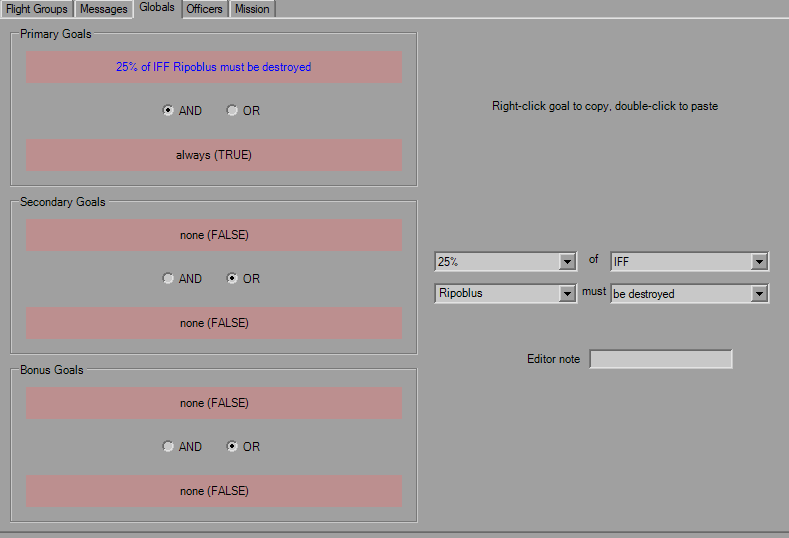

Global Goals

This tab is even simpler, in that it only contains the six triggers for the goals. Two for each, standard trigger rules apply, including the toolbar and mouse controls for Copy and Paste functionality.
The only item of note is more of a misison design standpoint, and that is to either ensure that when using single goals it's set to "OR FALSE" or "AND TRUE", as many times I've seen this been set to "AND FALSE" which basically means the goal will never complete, and you'll never finish the mission. YOGEME defaults to "OR FALSE" so you shouldn't have to worry about it.
The Editor note applies to the goal, not the individual triggers. I believe that this is what turned into the EoM Notes in later platforms.